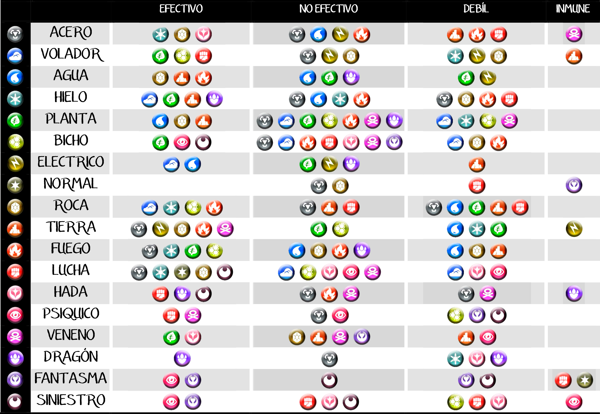

Tipos:
El tipo es una característica que poseen los Pokémon y los movimientos desarrollados por estos que permite su clasificación y crean relaciones entre ellos basadas en las ventajas y desventajas. Algunos Pokémon pueden pertenecer a dos tipos a la vez, mientras que los movimientos solo a uno. Por otra parte, existen ciertos factores que hacen que algunos Pokémon cambien de tipo. La mayoría de los tipos fueron introducidos en la primera generación. Los tipos acero y siniestro fueron añadidos en la segunda generación. El tipo hada se añadió en la sexta generación. El tipo astral, únicamente accesible mediante el fenómeno de la teracristalización, se introdujo en la novena generación.
